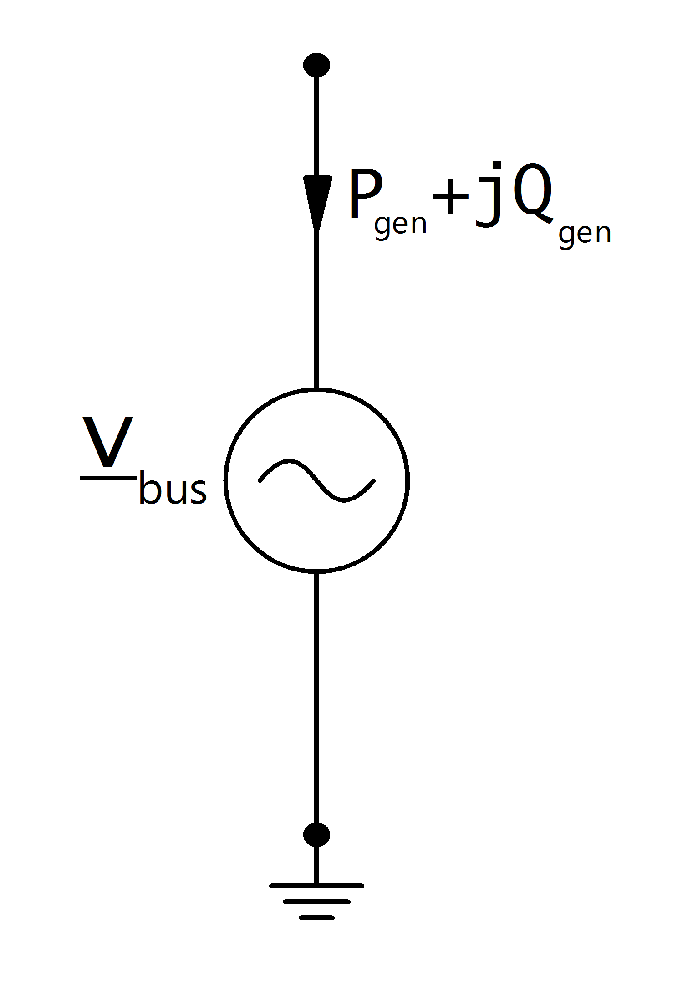

Generator¶
See also
Parameters
net.gen
| Parameter | Datatype | Value Range | Explanation |
| name | string | name of the generator | |
| type | string | naming conventions:
“sync” - synchronous generator
“async” - asynchronous generator
|
type variable to classify generators |
| bus* | integer | index of connected bus | |
| p_kw* | float | \(\leq\) 0 | the real power of the generator [kW] |
| vm_pu* | float | voltage set point of the generator [p.u] | |
| sn_kva | float | \(>\) 0 | nominal power of the generator [kVA] |
| min_q_kvar | float | minimal reactive power of the generator [kVar] | |
| max_q_kvar | float | maximal reactive power of the generator [kVar] | |
| scaling* | float | \(\leq\) 0 | scaling factor for the active power |
| in_service* | boolean | “True” - in service
“False” - out of service
|
specifies if the generator is in service. Only in service elements are considered during loadflow calculation |
*necessary for executing a loadflow calculation.
Note
Active power should normally be negative to model a voltage controlled generator, since all power values are given in the load reference system. A generator with positive active power represents a voltage controlled machine. If you want to model constant generation without voltage control, use the Static Generator element.
Loadflow Model
Generators are modelled as PV-nodes in the loadflow:
{kind=link}
Voltage magnitude and active power are defined by the input parameters in the generator table:
Results
net.res_gen
| Parameter | Datatype | Explanation |
| p_kw | float | resulting active power demand after scaling [kW] |
| q_kvar | float | resulting reactive power demand after scaling [kVar] |
| va_degree | float | generator voltage anlge [degree] |
| vm_pu | float | voltage at the generator [p.u] |
The loadflow returns reactive generator power and generator voltage angle:
Note
If the loadflow is run with the enforce_qlims option and the generator reactive power exceeds / underruns the maximum / minimum reactive power limit, the generator is converted to a static generator with the maximum / minimum reactive power as constant reactive power generation. The voltage at the generator bus is then no longer equal to the voltage set point defined in the parameter table.